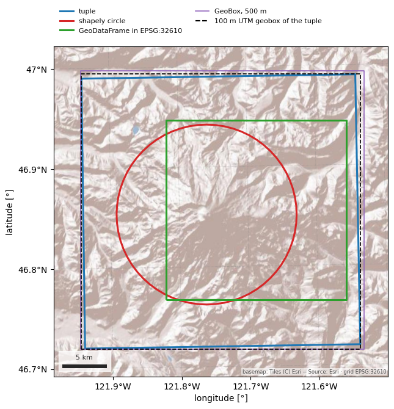

Note
Go to the end to download the full example code.
Areas of interest, time ranges and the catalog#
Every loader in the package takes the same two positional inputs, aoi and
time, and they accept the same forms everywhere. esd.aoi.parse_aoi
turns a bounding-box tuple, a shapely geometry, a GeoDataFrame in any CRS or an
odc.geo GeoBox into one AOI with a footprint
in EPSG:4326, a UTM zone and a grid on request. esd.temporal.parse_time
turns "2023-10", a (start, end) pair or a STAC-style
"2023-10/2024-06" interval into an inclusive pair of timestamps, expanding
partial dates to the period they name.
The catalog is the third shared piece: one declarative entry per product,
with its access routes, which of them need credentials, its variables and its
citation. esd.catalog.list, search and describe read it, and so do
the generated documentation pages and the weekly health probes, so the table
here cannot disagree with the docs.
The one figure draws the four AOI forms and the 100 m UTM grid one of them implies over a basemap, in the UTM zone the AOI itself picked. Nothing here needs credentials.
import geopandas as gpd
import matplotlib.pyplot as plt
import shapely
from matplotlib.lines import Line2D
import easysnowdata as esd
print(f"easysnowdata {esd.__version__}")
easysnowdata 0.3.3.dev19+gde94f7b3f
Form 1: a (west, south, east, north) tuple in EPSG:4326. .bounds
echoes it, .utm_crs is the UTM zone at the centroid (here zone 10N), and
.to_geobox(resolution=100) is the grid a loader would resample onto with
crs="utm": 100 m pixels, whole pixels, in metres.
bbox = (-121.94, 46.72, -121.54, 46.99) # Mount Rainier
from_tuple = esd.aoi.parse_aoi(bbox)
print(from_tuple)
print("bounds ", from_tuple.bounds)
print("utm_crs ", from_tuple.utm_crs)
geobox = from_tuple.to_geobox(resolution=100)
print("geobox ", geobox.shape, geobox.crs, geobox.resolution)
AOI(bounds=(-121.9400, 46.7200, -121.5400, 46.9900), clip=True)
bounds (-121.94, 46.72, -121.54, 46.99)
utm_crs EPSG:32610
geobox Shape2d(x=310, y=306) EPSG:32610 Resolution(x=100, y=-100)
Form 2: a shapely geometry, also in EPSG:4326. A 10 km circle around the summit, built in UTM and handed over in degrees the way a GeoJSON would be.
summit = gpd.GeoSeries([shapely.Point(-121.7603, 46.8523)], crs="EPSG:4326")
circle = summit.to_crs(from_tuple.utm_crs).buffer(10_000).to_crs("EPSG:4326")
from_shapely = esd.aoi.parse_aoi(circle.iloc[0])
print(from_shapely)
AOI(bounds=(-121.8914, 46.7623, -121.6292, 46.9423), clip=True)
Form 3: a GeoDataFrame in another CRS. Loaders reproject it themselves, so a
basin outline in a projected CRS needs no to_crs first; source_crs
remembers what came in.
square_utm_gdf = gpd.GeoDataFrame(
geometry=[shapely.box(590_000, 5_180_000, 610_000, 5_200_000)], crs="EPSG:32610"
)
from_gdf = esd.aoi.parse_aoi(square_utm_gdf)
print(from_gdf, "source_crs:", from_gdf.source_crs.to_string())
AOI(bounds=(-121.8213, 46.7645, -121.5546, 46.9474), clip=True) source_crs: EPSG:32610
Form 4: an odc.geo GeoBox. This is the form to use when a product should
land on a grid you already have (another product’s, say): the AOI keeps it as
its native grid and to_geobox() with no arguments hands it back unchanged.
native = from_tuple.to_geobox(resolution=500)
from_geobox = esd.aoi.parse_aoi(native)
print(from_geobox, "native grid returned:", from_geobox.to_geobox() is native)
AOI(bounds=(-121.9466, 46.7147, -121.5270, 46.9981), clip=True, geobox=Shape2d(x=63, y=62)) native grid returned: True
clip=False is stored on the AOI, not acted on here: raster loaders then
return the covering tiles or granules whole instead of clipping to the
footprint, which is what you want when the AOI edge should not cut a scene.
print("clip:", from_tuple.clip, "->", esd.aoi.parse_aoi(bbox, clip=False).clip)
clip: True -> False
Time. A partial date expands to the whole period it names, a pair is taken as
given (a date with no time runs to the end of that day), and the STAC
start/end string does the same with one argument. An open end, as in
"2024-06/.." or None, means now, computed when the loader is called.
for when in ("2023-10", ("2023-10-01", "2024-06-30"), "2023-10/2024-06", "2024-06/.."):
start, end = esd.temporal.parse_time(when)
print(f"{when!s:34} -> {start} to {end}")
print("today:", esd.temporal.today())
2023-10 -> 2023-10-01 00:00:00 to 2023-10-31 23:59:59
('2023-10-01', '2024-06-30') -> 2023-10-01 00:00:00 to 2024-06-30 23:59:59
2023-10/2024-06 -> 2023-10-01 00:00:00 to 2024-06-30 23:59:59
2024-06/.. -> 2024-06-01 00:00:00 to 2026-09-24 00:43:23.894179
today: 2026-09-24
The catalog: which themes exist, what one theme holds, and a free-text search across ids, titles, descriptions, tags, variables and source notes.
print(esd.catalog.themes())
columns = ["title", "default_source", "requires", "credential_free"]
print(esd.catalog.list(theme="snow")[columns].to_string())
print("\nproducts mentioning 'swe':", ", ".join(esd.catalog.search("swe").index))
['stations', 'snow', 'sar', 'optical', 'terrain', 'land', 'hydro', 'boundaries', 'climate']
title default_source requires credential_free
id
modis-snow MODIS snow cover (MOD10A1, MOD10A2, MOD10A1F) nsidc earthdata True
mountain-snow-mask Wrzesien global seasonal mountain snow mask zenodo none True
snodas SNODAS snow water equivalent and snow depth nsidc none True
snow-classification Sturm & Liston seasonal snow classification nsidc earthdata True
ucla-snow-reanalysis UCLA snow reanalysis (Western US and High Mountain Asia) nsidc earthdata False
viirs-snow VIIRS snow cover (VNP10A1, VNP10A1F) nsidc earthdata False
products mentioning 'swe': koppen-geiger, grdc-wmo-basins, snodas, ucla-snow-reanalysis, awdb-stations, cdec-stations, databc-stations, nve-stations, yukon-stations, snow-station-archive
describe renders one product as Markdown: every access route with its
credentials, resolution and latency, then the variables. It is the same text
the generated docs page is built from.
print("\n".join(esd.catalog.describe("snodas").splitlines()[:15]))
# SNODAS snow water equivalent and snow depth (`snodas`)
NOHRSC Snow Data Assimilation System daily 1 km snow water equivalent, snow depth, melt, sublimation and snowpack temperature over the CONUS (masked) or the wider modelling domain (unmasked), 2003-10 onward.
| source | provider | credentials | resolution | extent | temporal | latency | notes |
| --- | --- | --- | --- | --- | --- | --- | --- |
| `nsidc` (default) | raster_http | none | 1000 m | CONUS (masked) / North America (unmasked) | 2003-10/present | ~1 day | authoritative NOHRSC archive: one tar per day of gzipped flat-binary grids plus text headers; no credentials, no cloud-native mirror exists |
| `gee-climate-engine` | gee | earthengine | 1000 m | CONUS | 2003-10/present | ~1 day | Climate Engine's community re-hosting: analysis-ready and lazy, but a non-authoritative mirror with only SWE and snow depth |
| variable | units | dtype | nodata | categorical |
| --- | --- | --- | --- | --- |
| `SWE` | m | float32 | — | no |
| `snow_depth` | m | float32 | — | no |
| `snow_melt` | m | float32 | — | no |
The four footprints and the 100 m grid outline in the AOI’s UTM zone. The
tuple, the 500 m GeoBox built from it and the 100 m geobox almost coincide:
a grid is a little larger than the footprint it covers because it snaps to
whole pixels. The graticule, scale bar and basemap come from finish_map.
utm = from_tuple.utm_crs
layers = [
("tuple", from_tuple, "#1f77b4", "-", 2.2),
("shapely circle", from_shapely, "#d62728", "-", 2.2),
("GeoDataFrame in EPSG:32610", from_gdf, "#2ca02c", "-", 2.2),
("GeoBox, 500 m", from_geobox, "#9467bd", "-", 1.2),
]
fig, ax = plt.subplots(figsize=(7.5, 6.8))
handles = []
for name, parsed, color, style, width in layers:
parsed.to_crs(utm).boundary.plot(
ax=ax, color=color, linestyle=style, linewidth=width
)
handles.append(
Line2D([], [], color=color, linestyle=style, linewidth=width, label=name)
)
grid_outline = gpd.GeoSeries([geobox.extent.geom], crs=str(geobox.crs)).to_crs(utm)
grid_outline.boundary.plot(ax=ax, color="black", linestyle="--", linewidth=1.2)
handles.append(
Line2D([], [], color="black", linestyle="--", label="100 m UTM geobox of the tuple")
)
x0, y0, x1, y1 = from_tuple.to_crs(utm).total_bounds
pad = 0.1 * (x1 - x0)
ax.set_xlim(x0 - pad, x1 + pad)
ax.set_ylim(y0 - pad, y1 + pad)
ax.legend(
handles=handles,
fontsize=8,
loc="lower left",
bbox_to_anchor=(0.0, 1.02),
ncol=2,
frameon=False,
)
esd.plotting.finish_map(ax, utm, basemap=True)
fig.tight_layout()
